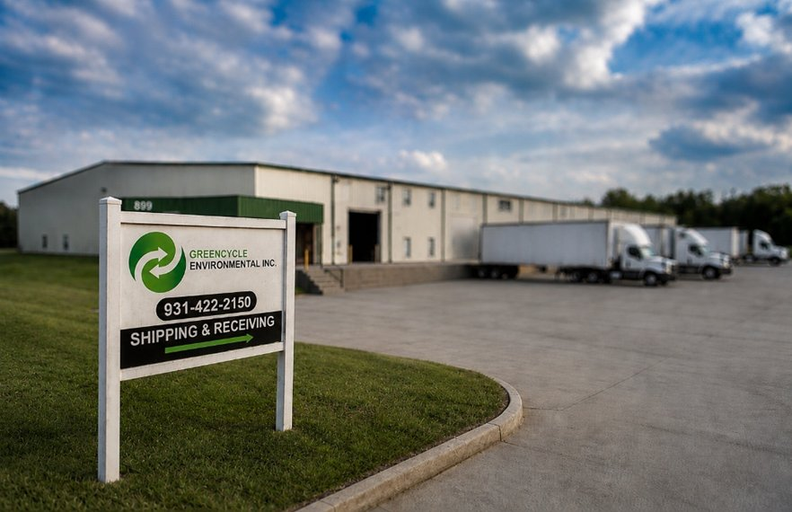
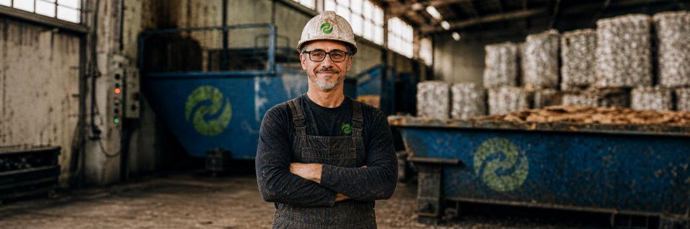

MATERIAL INTAKE & CONSOLIDATION
We coordinate scheduled and on-demand pickups, consolidating challenging, excess, and recoverable materials to fit your volume and site needs.
Read More →Reliable Logistics, Equipment & Recycling Support
GreenCycle Environmental delivers end-to-end materials recovery - from buying and selling post-industrial recyclables to in-house reprocessing, material destruction, and end-of-life surplus management - backed by coordinated logistics that keep your operation moving. You stay focused on your business; we’ll take the scrap from here.
Explore ServicesWe streamline material management and processing for facilities nationwide. By pairing dedicated logistics with specialized toll work, material destruction, and end-of-life surplus solutions on our in-house equipment lines, GreenCycle Environmental keeps your operations clear, efficient, and running smoothly.
Think of us as an extension of your team - your central point of contact for turning post-industrial materials into value, simplifying material flow, and delivering transparent reporting.

We coordinate scheduled and on-demand pickups, consolidating challenging, excess, and recoverable materials to fit your volume and site needs.
Read More →We sort, categorize, and separate materials by type, grade, and condition - using hands-on segregation and practical material knowledge to prepare them for the next step.
Read More →From baling and shredding to grinding, extrusion, and compounding, we process materials in-house to create more consistent, manageable, and reusable feedstock.
Read More →We identify practical recovery and reuse pathways for processed materials. When materials have reached the end of their useful life, we can also coordinate destruction and appropriate disposal, with certificates of destruction available when required.
Read More →
GreenCycle Environmental processes recoverable and end-of-life materials through a combination of sorting, size reduction, consolidation, and plastics processing. Our equipment and hands-on processing capabilities help prepare materials for recycling, reuse, downstream manufacturing, or destruction and appropriate disposal when continued use is no longer practical.
We serve as your resource recovery partner, simplifying the management of surplus materials and recyclable plastics, reducing handling costs, and helping keep valuable resources in productive use.
From segregation and processing to consolidation, recycling, and documented destruction, we provide the expertise and operational support needed to move materials efficiently from excess to opportunity - or to an appropriate end-of-life outcome when reuse is no longer practical.
Whether we process materials in-house or work alongside trusted partners, we develop the right path for your material - from sourcing and recovery to toll processing, reprocessing, market solutions, documented destruction, and end-of-life disposition.
We work with businesses to identify, sort, process, and recover plastics and other recyclable or surplus materials that can be difficult to manage through traditional channels.
Clear communication and straightforward pricing, with solutions built around your material, volume, specifications, and operational needs.
We take the time to understand your operation, your material streams, and your goals - then develop a recovery approach that makes sense for your business.
From heavy hand sorting and segregation to baling, shredding, grinding, extrusion, compounding, and consolidation, we process materials with recovery, reuse, or destruction in mind - based on the most appropriate outcome for each material stream.
Material streams change. Your operation changes. Our approach can adapt with you - whether volumes increase, materials change, or new recovery opportunities arise.
GreenCycle Environmental helps businesses find better solutions for challenging and surplus materials - from sourcing and processing to recycling, recovery, reuse, resale, documented destruction, and end-of-life disposal.
LET’S MAKE SOMETHING OF IT – TOGETHER